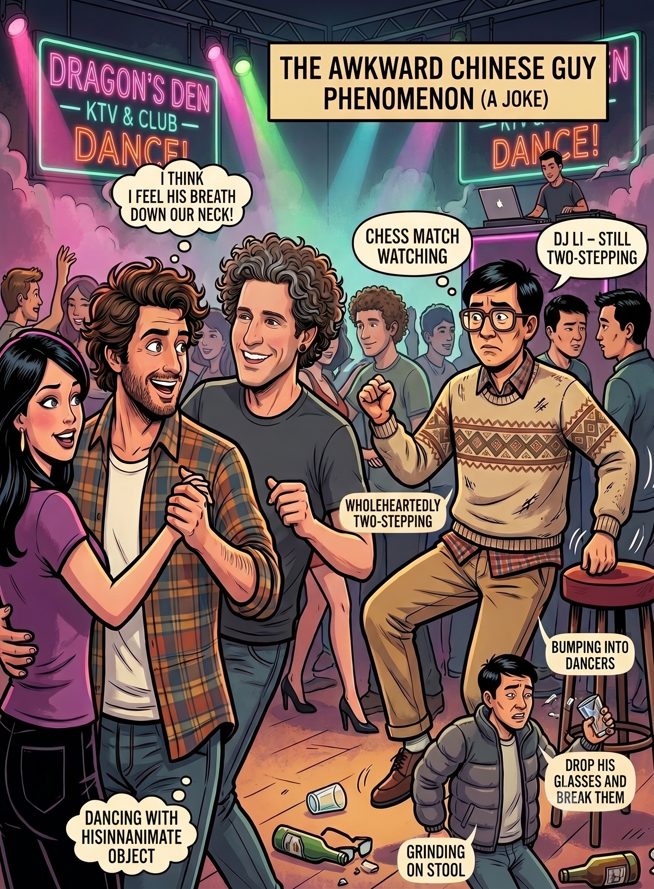

The Awkward Chinese Guy Phenomenon
So, I have been clubbing lately—quite a lot, well, more than ever before. Clubbing in China is like clubbing anywhere else: a whirlwind of smoke, drinks, lights, noise, and people trying to look a bit prettier than they actually are. Of course, that’s precisely what the alcohol is great for, too.
However, the massive difference in China is a character I like to call the Awkward Chinese Guy. This dynamic fits right in with the traditions of Commedia dell'arte, where you have your fixed theatrical archetypes: your male roles, your female roles, your joker, and your serious characters. In most global clubs, you have your pretty girls, your pretty boys, your bartender, your DJ and MC, and your drinks. In China, nightclubs get absolutely filled to the brim, but the striking contrast is the ratio—often, you'll look around and realize that out of twelve guys, there will be only one girl.

Lately, a large group of us has been going out together, usually a balanced mix of five guys and five girls, though our individual preferences and choices on the floor may vary. We dance, and we dance a lot. But whenever we hit the floor, there is inevitably an Awkward Chinese Guy around. The classic description is this:
- A man anywhere from his late twenties up to his forties, sometimes even his fifties.
- Dressed in "casual Friday" office attire: chinos, a dress shirt, and a married-guy sweater—very Bill Cosby.
- Alternatively, a man wearing a puffy jacket, perhaps smoking a cigarette.
- Often sporting thick glasses that were fashionable thirty years ago.
- His origins are entirely dubious, and so is his company.
This Awkward Chinese Guy will stand right on the edge of the dance floor looking incredibly out of place. You will be dancing with your partner, having a great time, and you'll turn around only to see this man standing directly behind you—as if you were playing a high-stakes game of chess and he was intensely studying your next move. You can practically feel his breath on your neck.
Most of the time, he will be dancing entirely by himself, wholeheartedly, but in a simple two-step that you can't help but smile at. Eventually, the Awkward Chinese Guy will slowly begin dancing with the inanimate objects around him—grinding against a barstool, pacing rhythmically toward a large speaker box, dancing with a table, or simply standing there staring blankly at you.
Then, he might drift closer to your circle. You'd almost think he was trying to dance with you, but he just stands there looking kind of funny, exuding the distinct energy of a husband who somehow secured a rare day off from his wife. To cap off the performance, he will usually do something wild to get attention: he'll drop his glasses and break them, or drink himself completely stupid and fall fast asleep right at his table. Other times, he will continue pretending to dance on his own, repeatedly bumping into you or your partner while looking deeply awkward about the collision.
The final, ultimate charm of the Awkward Chinese Guy is his endurance. Even at the end of the night, when the music slows and the dance floor is completely empty, you can look out and find him, still out there, faithfully two-stepping on his own.